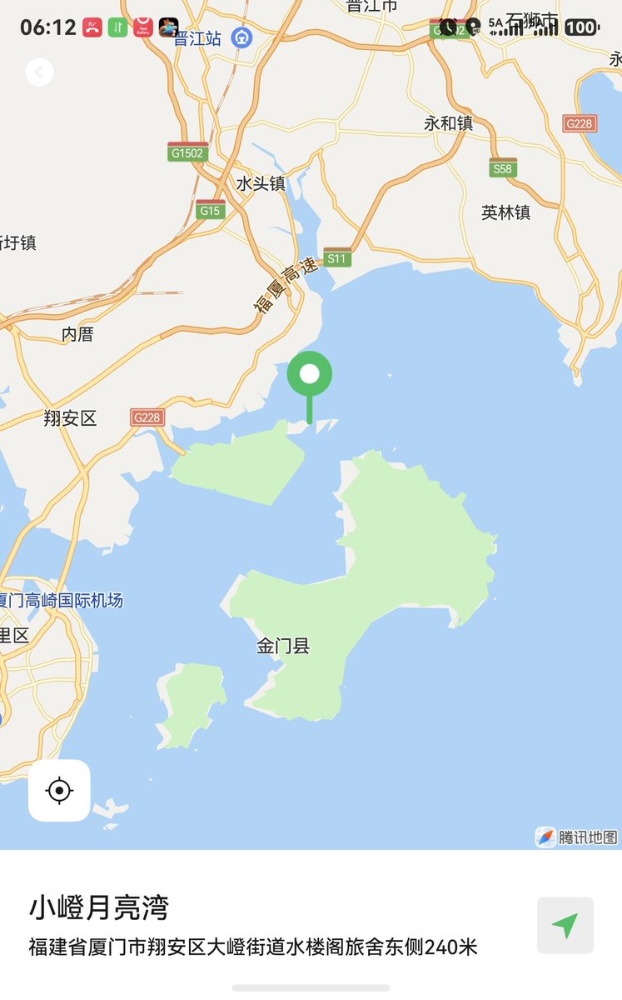
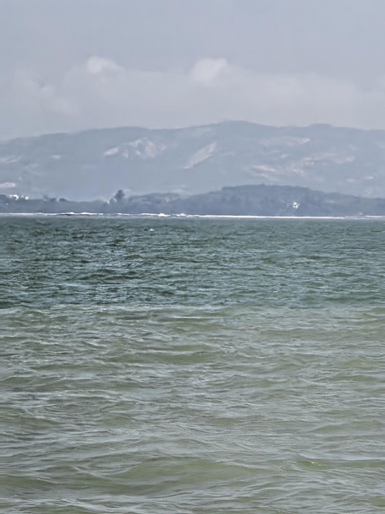

奶昔🥤
@realNyarime
厦门和金门真的超近！退潮的时候，两岸最近距离只有1800米，你们年轻人体力好的完全可以游过去。猜猜为什么以前金门岛上对空瓶子、塑料瓶等所有漂浮物都有严格管制？
因为真的有人抱着一个篮球，或者把许多塑料瓶捆在一起就游过来了！林毅夫俩篮球过来的，事后又说两个篮球纯属造谣，是自己硬游过来的
不过今年还没人从厦门晚上游泳过去。往年基本年年都有大爷划过去吃午饭，跟阿兵哥一起炒方便面、吃凤梨聊天 应该是大陆巡检力度加大了，而且金门海巡署晚上也盯得紧，半夜总能遇到值班的海巡跑到7-11买点心吃。

